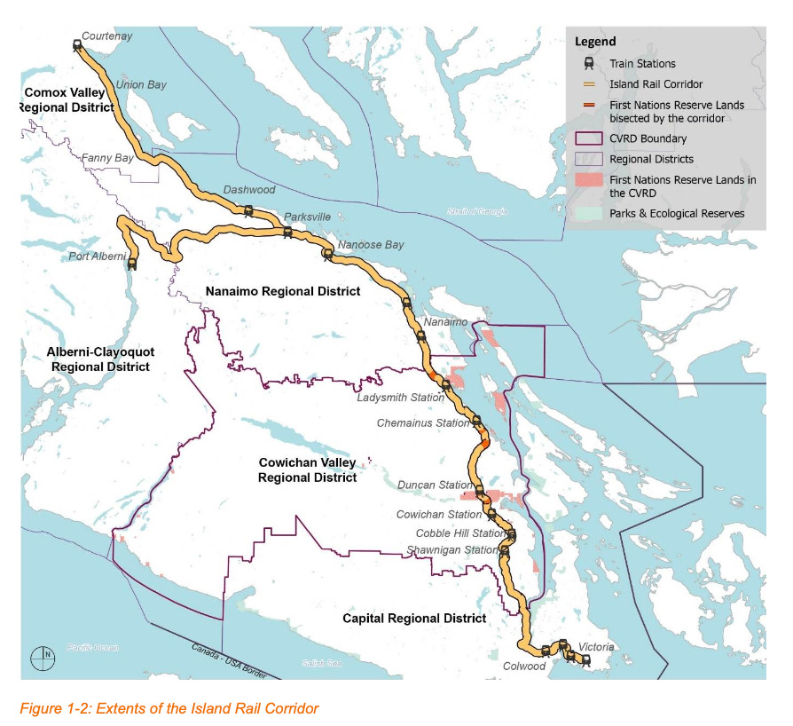
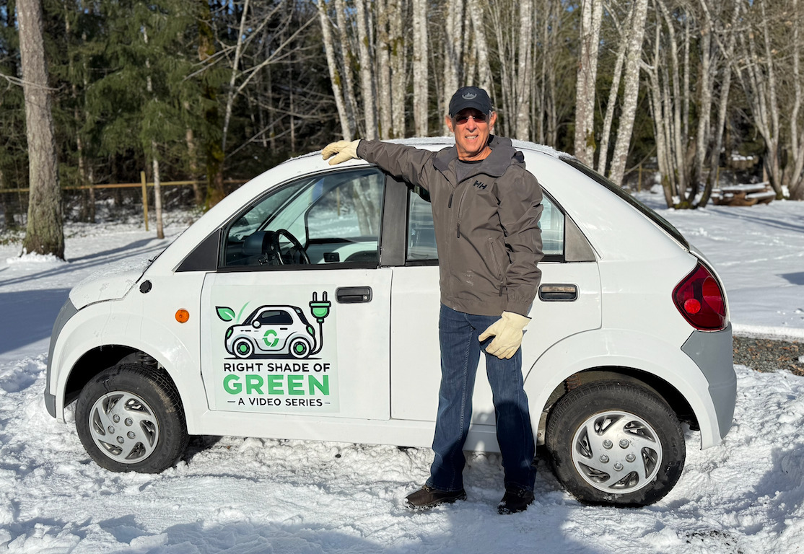

Transforming the 225 km E&N Railway Corridor into a clean energy pathway — connecting communities, restoring Indigenous land ownership, and building Canada's electric future.
The Corridor Get InvolvedUnder BC Motor Vehicle Act Regulations Section 24.06, Neighbourhood Zero Emission Vehicles (NZEVs) are four-wheeled electric vehicles capable of speeds up to 40 km/hr. They can operate on any road with a speed limit of 40 km/hr or less.
These are not golf carts — they are purpose-built electric neighbourhood vehicles, low-cost, low-speed, and built for the electric future Canada is already moving toward.
This EV classification has been legal in BC for decades. My 2001 Kelowna-built NZEV (#110) was 20 years ahead of its time.


NZEVs cost a fraction of full-speed EVs to purchase and operate, making clean transportation accessible to more communities.
A two-way NZEV pathway can be built on gravel, concrete, asphalt, or wood — dramatically reducing infrastructure costs.
A new pathway unlocks previously inaccessible land along the corridor — creating a services corridor with billions in development potential.
The E&N Railway runs from Victoria to Courtenay. Rail reinstatement is prohibitively expensive. NZEV conversion is not.
The corridor intersects 14 First Nations territories, creating a replicable reconciliation and land development framework for each.
This BC project is ready for federal funding. With ICF support, we can turn it into a shovel-ready NZEV pilot in short order.
This NZEV corridor will unlock billions in economic development along its entire route plus jobs for generations to come.
EV Island is in active conversation with Chief James Thomas of the Halalt First Nation about establishing a pilot NZEV program on their 1.53 km rail corridor segment. The goal is to create a framework that any First Nation along the route can replicate.
The pilot addresses real challenges first: the raised rail embankment currently acts as a dyke, trapping Chemainus River floodwater on the northern portion of the reserve. Remediation — including embankment breach and culvert installation — is integrated into the conversion plan, not treated as a separate problem.
In 2023, the Snaw-Naw-As First Nation won a BC Court of Appeal case returning their portion of the corridor, establishing a landmark precedent. Their model offers a tested path for other Nations to follow.
First Nations Framework →